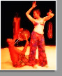
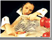
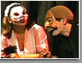
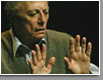
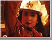
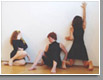
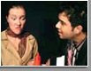

04 a 05 de maio
Cia Alaya de Dança
Matracar de Lenora Lobo
Matracar de Lenora Lobo
Resumo: "O Grupo Alaya, desde sua criação vem sendo marcado por esses traços de origem, que o colocam dentre as mais sérias e instigantes Cias de Dança do Brasil" - Cássia Navas.
Em MATRACAR, o amálgama que empresta a forma e dita o ritmo é o bumba-meu-boi. A Cia Alaya investiga a cultura popular brasileira e a manifesta através do Teatro do Movimento, método de Lenora Lobo e sistematizado por Cássia Navas.
Horário: qui 20h e sex 21h
Onde: SESC Santana/ Av Luiz Dumont Vilares, 579
Quanto: R$ 10 e 5
30 de maio
Espetáculo solo de dança
contemporânea - TOCA
Concepção, criação e interpretação: Luciana Bortoletto
Direção: Letícia Sekito
Cantora (ao vivo): Mônica Galvão
Faz uma analogia entre Corpo e Casa. Ambos espaços são preenchidos de memórias e imagens. Neles podemos nos entocar, saindo de uma realidade e imergindo em outras, mais íntimas. O corpo comunica sensações que a intérprete-criadora tem ao se recordar da casa onde viveu no período de sua infância. Essa imersão gera estados corporais diversos, tecendo uma relação poética entre a concretude inerente ao corpo e a subjetividade do imaginário e da memória.
Horário: 20h
Onde: SESC Santo André/ rua Tamarutaca, 302 Vila Guiomar Santo André - SP telefone: 11 4469-1200
Quanto: R$ 10,00; R$ 8,00 (usuário matriculado). R$ 4,00 (trabalhador no comércio e serviços matriculado e dependentes). 5,00 (terceira idade, aposentados, estudantes e professores da rede pública).

26 de abril a 25 de maio de 2006
Mulheres - Núcleo Trecos e Cacarecos
da Cooperativa Paulista de Teatro
Duas mulheres estão em uma casa ao vasculharem baús, malas e gavetas, lembranças e sentimentos vêem à tona através de histórias que representam os vários ciclos da alma feminina.
Como mentora desses ciclos está a história de La Loba, a mulher-lobo que recolhe ossos no deserto e que conserva consigo aquilo que corre o risco de se perder para o mundo.
Ela recolhe ossos e ensinamentos de mulheres como A esposa do Barba-Azul que representa a natureza jovem e ingênua. Esta mulher, através de sua curiosidade, desperta em si a compreensão de que se existe algo de secreto e proibido é preciso que ele seja investigado.
Resgata também a Mulher-Esqueleto que representa a perda do medo de amar.
Por fim, acolhe a Donzela sem Mãos que representa o ciclo da morte e ressurreição da psique. O ciclo de toda uma existência que consiste em vaguear pelo subterrâneo psíquico, ser alimentada pelos frutos do espírito e tornar-se um ser único e independente, para assim então, se unir a tudo a que ama.
As histórias se completam e revelam a natureza instintiva da mulher até chegar ao último ciclo, representado pela própria La Loba, a que sabe, a que fareja os fatos, a que cura, e que tem o poder de gerar uma nova vida.
Horário: Qua e Qui 21h
Onde: Teatro Fábrica São Paulo
Rua da Consolação, 1623 - Telefone: 3255-5922
Quanto: Ingressos a R$ 20,00 - R$10,00

Até 25 de maio
A Farsa do Juiz Corregedor
Grupo do Pato com Trufa
A peça é uma comédia baseada no texto de Alejandro Casona, A Farsa do Juíz Corregedor, cuja trama central conta o julgamento executado por um corregedor corrupto e comilão, que abusa de seu poder para defender tendenciosamente um submisso cozinheiro que, em benefício do próprio juiz, havia cometido alguns atrapalhados delitos contra os cidadãos da vizinhança.
Como prólogo, integra o espetáculo um recorte de texto adaptado pelo grupo no qual conhecemos o Sr. Schmitt, um homem pateticamente crédulo cujo corpo é desmontado por dois espertos e persuasivos palhaços.
Horário: 21h
Onde: Teatro Fábrica São Paulo
Rua da Consolação, 1623 - Telefone: 3255-5922
Duração: 65 minutos
Quanto: Ingressos a R$ 20,00 - R$10,00
 Até 28 de maio
Wittgenstein !
Traz Jairo Arco e Flexa para o palco
para comemorar 30 anos de carreira.
Uma das figuras mais importantes e controvertidas do pensamento ocidental no século XX, Wittgenstein revolucionou as noções da linguagem e da teoria do conhecimento com o “Tractatus Lógico Philosophicus”, única obra sua publicada em vida...
Horário: Sex e Sáb, 21:30h Dom, 20:30h
Onde: Teatro Fábrica São Paulo
Rua da Consolação, 1623 - Telefone: 3255-5922
Duração: 75 minutos
Quanto: Ingressos a R$ 20,00 - R$10,00

3 de junho
Biedermann e os incendiários
Vários incêndios assustam uma cidade e um clima de pavor e desconfiança atinge a todos. Um desconhecido pede abrigo na casa de um dos habitantes que acaba descobrindo que o hóspede trouxe consigo mais um amigo e galões de gasolina.
Horário: 21h
Onde: Espaço Cênico Ademar Guerra
Rua Vergueiro, 1000 - Paraíso - CEP 01504-000 - São Paulo - SP
Quanto: R$10,00

Até dia 4 de junho
As Bastianas
Bastiana é uma mulatinha vesga que segue por uma aldeia do sertão nordestino vendendo amor, sabedoria e sossego nos seus pedaços de bolo de girassol.
Horário: Domingo, às 20h
Onde: Espaço Cênico Ademar Guerra
Rua Vergueiro, 1000 - Paraíso - CEP 01504-000 - São Paulo - SP
ccsp@prefeitura.sp.gov.br
Quanto: R$10,00
2 de junho a 9 de julho de 2006
Psicose 4h48de Sarah Kane
Marcos Damaceno Companhia de Teatro
Representante da dramaturgia inglesa contemporânea, Sarah Kane tornou-se conhecida pelo modo como sua carreira começou, com a polêmica causada acerca de Blasted, sua primeira peça, e pelo modo como terminou, com seu suicídio, aos 28 anos de idade, e a encenação póstuma de sua quinta e última peça, Psicose 4h48.
Horário: Sex e Sáb, 21:30h Dom, 20:30h
Onde: Teatro Fábrica São Paulo
Rua da Consolação, 1623 - Telefone: 3255-5922
Duração: 60 minutos
Quanto: Ingressos a R$ 20,00 - R$10,00
31 de maio a 15 de junho de 2006
OITO
Direção: Antonio Januzelli e Juliana Jardim
Uma delicada reflexão sobre o Homem e o Tempo
O espetáculo OITO, dirigido por Antonio Januzelli e Juliana Jardim, é uma profunda e delicada reflexão sobre a existência do homem no mundo de hoje. A relação homem-tempo, homem-homem, homem-sem tempo; o desconforto perante as rupturas, a falta de comunicação entre as pessoas, e homens que nunca acordaram para o que de fato julgaram ser importante em suas vidas – esse é o assunto sobre qual trata OITO.
No palco, oito trajetórias de encontros, desencontros e descobertas, contadas através de uma linha narrativa que busca atingir os sentidos mais sutis do espectador, em um espaço de intimidade e cumplicidade. As figuras que são apresentadas propõem temas de memória, da busca por quem se é, por quem se foi, e o fato de que a cada dia temos mais lembranças e menos tempo. Um espetáculo “aberto”, silencioso, sensorial.
“Para nós, a linguagem do teatro é o ator, o homem. É ele que precisa ser descoberto, ser trabalhado” – diz Januzelli, também diretor do espetáculo O porco, que teve a indicação ao prêmio Shell de melhor ator (Henrique Schaffer). O ator, em OITO, é o centro. Desta forma, o espetáculo desenvolve-se em palco vazio, sem cenários, com iluminação que revela o todo e que envolve a platéia na cena.
Horário: Qua e Qui, 21h
Onde: Teatro Fábrica São Paulo
Rua da Consolação, 1623 - Telefone: 3255-5922
Duração: 60 minutos
Recomendação: 14 anos
Quanto: Ingressos a R$ 20,00 - R$10,00
De 31 de maio a 22 de junho
A violência da carne
um manifesto quase vegetariano
Casal de marginais invade a casa de um milionário.
O fruto do assalto leva a uma disputa entre os bandidos.
Horário: quartas e quintas às 21h
Onde: Sala Paulo Emilio Salles Gomes
Rua Vergueiro, 1000 - Paraíso - CEP 01504-000 - São Paulo - SP
ccsp@prefeitura.sp.gov.br
Quanto: R$10,00
De 26 de maio a 24 de junho
Elektra on-line
O mito grego é revisitado, ganhando “cores” da atualidade e nova narrativa a partir do
encontro de Agamenon e sua filha Elektra.
Horário: sextas a sábados, às 21h
Onde: Sala Paulo Emilio Salles Gomes
Rua Vergueiro, 1000 - Paraíso - CEP 01504-000 - São Paulo - SP
Quanto: R$10,00
Até dia 25 de junho
Teatro Infantil
Teresinha e Gabriela - uma na rua e outra na janela
As diferenças entre duas meninas que não se conhecem e que alimentam uma antipatia recíproca, mas que descobrem o respeito mútuo.
Horário: Sábados, domingos e feriados, as 16:00 h
Onde: Sala Paulo Emilio Salles Gomes
Rua Vergueiro, 1000 - Paraíso - CEP 01504-000 - São Paulo - SP
ccsp@prefeitura.sp.gov.br
Quanto: R$ 6,00
Até 25 de junho de 2006
Fragmentos de uma Carta aos Anfíbios
Obara – Grupo de Pesquisa e Criação
O OBARA apresenta o espetáculo Fragmentos de uma Carta aos Anfíbios comemorando cinco anos de pesquisa e criação teatral. As três intérpretes do grupo propõem uma reflexão sobre o corpo como espaço de contradições humanas. Alguns poemas de Ricardo Domeneck, em Carta aos Anfíbios, são explorados no jogo entre movimentos e sonoridades que compõem a dramaturgia da cena. A encenação caminha ao lado do poeta, explorando corpo e texto em sua materialidade.
Fragmentos de uma Carta aos Anfíbios discute a contemporaneidade. Há um confronto entre a feminilidade dos movimentos, a limpeza do espaço cênico e a atmosfera cosmopolita presente nos poemas.
Horário: Terças, 21h
Onde: Teatro Fábrica São Paulo
Rua da Consolação, 1623 - Telefone: 3255-5922
Duração: 60 minutos
Quanto: Ingressos a R$ 20,00 - R$10,00

Até 29 de julho
Pelos Cotovelos
Direção: Marcelo Mansfield
“Pelos Cotovelos” é uma comédia dividida em 3 cenas distintas que discutem o cotidiano das grandes cidades. Na primeira Rodrigo Frampton está no porta malas de seu veículo durante um sequestro relâmpago. Na segunda, Wanessa Morgado está as voltas com trotes telefônicos durante a madrugada. Na terceira os dois contracenam juntos, com personagens diferentes, travando um diálogo durante o almoço.
Dirigidos pelo renomado ator Marcelo Mansfield, a jovem dupla de atores traz à cena as ansiedades, os problemas e alegrias típicas da modernidade e da automação cotidiana. Os textos são baseados em obras de Sergio Roveri, autor de "O Encontro das Águas" e "O Horário de Visita", dramas premiados recentemente encenados em São Paulo.
Horário: Sex e Sáb, meia-noite
Onde: Teatro Fábrica São Paulo
Rua da Consolação, 1623 - Telefone: 3255-5922
Duração: 70 minutos
Recomendação: 12 anos
Quanto: Ingressos a R$ 20,00 - R$10,00
23 de junho
Carlinhos Antunes e Orquestra Mundana
World Music que busca inspiração nos diversos países mediterrâneos, lançando CD 'Ao vivo', com participação do percussionista libanês William Bordokan.
Horário: 19hs
Onde: Unidade Provisória Sesc Avenida Paulista, Teatro (230 lug.)
Av. Paulista, 119 - Telefone: 3179-3700
Quanto: Entrada Gratuita
24 de junho
Choro Rasgado
Clássicos do chorinho e repertório próprio, em formação de pandeiro, flauta, violão e violão de 7 cordas.
Horário: 21hs
Onde: Sesc Pompéia, Choperia (800 pessoas)
Rua Clélia, 93 - V. Pompéia - Telefone: 3871-7700.
Quanto: Entrada Gratuita
Até 30 de junho
Letras, Imagens e Sons
Mostra reúne produções nacionais recentes, adaptações de obras literárias.
Programação: Terça - 19hs - Cidade de Deus
Horário: 19hs
Onde: Teatro do Sesc Santana (349 lug.) - Av. Luiz Dumont Villares, 579 - Santana - Telefone: 6971-8700
Quanto: Entrada Gratuita (retirar ingresso a partir das 9hs).
Até 19 de junho
Luta Livre - Sem Limite de Tempo
Tema popular no México, mas que também ficou conhecido no Brasil por conta de personagens como Ted Boy Marino.
Programação: Sexta - 17hs - El Santo en el Museo de Cera (1963) - 19h30 - La Cabeza Viviente (1961).
Sábado - 17hs - Santo Vs. La Invasion de Los Marcianos (1967) - 19h30 - Santo Contra las Mujeres Vampiro (1961)
Domingo - 15hs - Santo Contra las Mujeres Vampiro (1961) - 15h30 - Santo vs La Invasion de Los Marcianos (1967).
Onde: Galeria Olido - Av. São João, 473 - Centro - Telefone: 3334-0001
Quanto: Entrada Gratuita (retirar ingressos 1 hora antes).
20 e 21 de junho
Mostra de Cinema da Zona Leste
'Ciclo Futebol e Arte', com o filme Ginga (2004), de Hank Levine, Marcelo Machado e Tocha Alves. No Sábado, após o filme, haverá debate com a presença de Tocha Alves e Écio Pasca, meio-campo do Palmeiras em 1967 e 68, ex-técnico da Portuguesa e do Juventus e ex-treinador das categorias de base da Seleção Brasileira.
Horário: 15hs
Onde: Sesc Itaquera - Cine-Teatro (180 lugares)
Av. Fernando do Espírito Santo Alves de Matos, 1.000 - Telefone: 6523-9200
Quanto: Gratuito (os ingressos podem ser retirados no setor de matrícula, a partir das 14h).